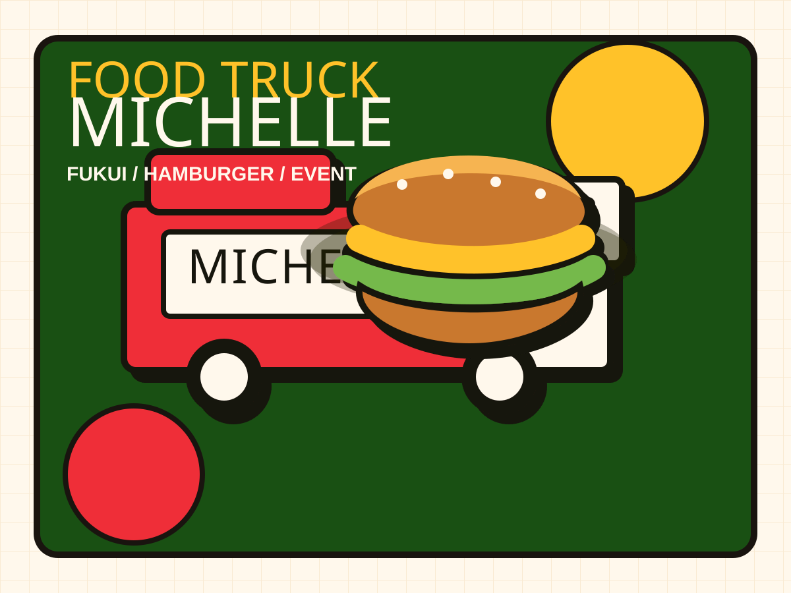

ガーリックシュリンプバーガーやMichelle Burgerを大きく掲載。
Fukui food truck hamburger
福井を走る イベント映えする バーガートラック。
Michelleは、福井県を中心に活動するハンバーガーのキッチンカー。 肉の焼ける音、香ばしいバンズ、赤と黄色のポップな世界観で、イベントの空気ごと盛り上げます。

Michelle Burger
EVENT READY
Photo Area
写真で、Michelleらしさを最初に伝える。
実制作では、ここに実際のバーガー写真、キッチンカー外観、鉄板で焼いている写真を入れます。 Instagramの雰囲気とそろえることで、サイトを見た瞬間に「このお店だ」と分かるようにします。
イベント会場で見つけやすいよう、車体写真を掲載。
鉄板で焼く臨場感を見せて、食欲を作る。
Schedule
今どこで食べられるかを、迷わず見せる。
Instagramの投稿が流れても、サイトに来れば直近の出店予定を確認できる形にします。
Shirogane Square
11:00-15:00 / Lunch truck
SEE SEA PARK
10:30-16:00 / Event booth
Nakago Gymnasium
12:00-18:00 / Local event
実制作では、ここをInstagram投稿、Googleカレンダー、または手動更新にできます。
Event Order
地域のお祭り、学校祭、会社行事へ。
通常営業の注文受付ではなく、イベント出店の相談を受けやすくする導線を用意します。 まずはInstagram DMへつなぎ、依頼が増えたら専用フォームにできます。
Instagramの投稿を、サイト内にも見せる。
実制作では、ここにInstagramの投稿やスクリーンショットを配置します。 アカウントリンクだけで終わらせず、サイト上でも雰囲気が伝わるようにします。
看板メニューの投稿を掲載
イベント・出店予定の投稿を掲載
現地の雰囲気が伝わる投稿を掲載